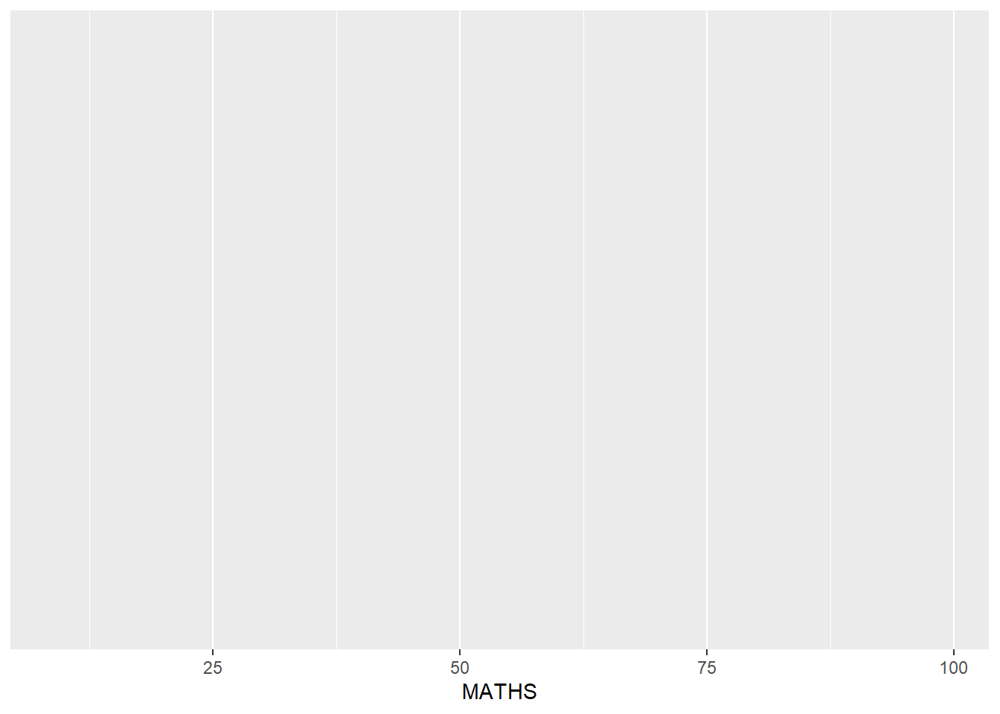
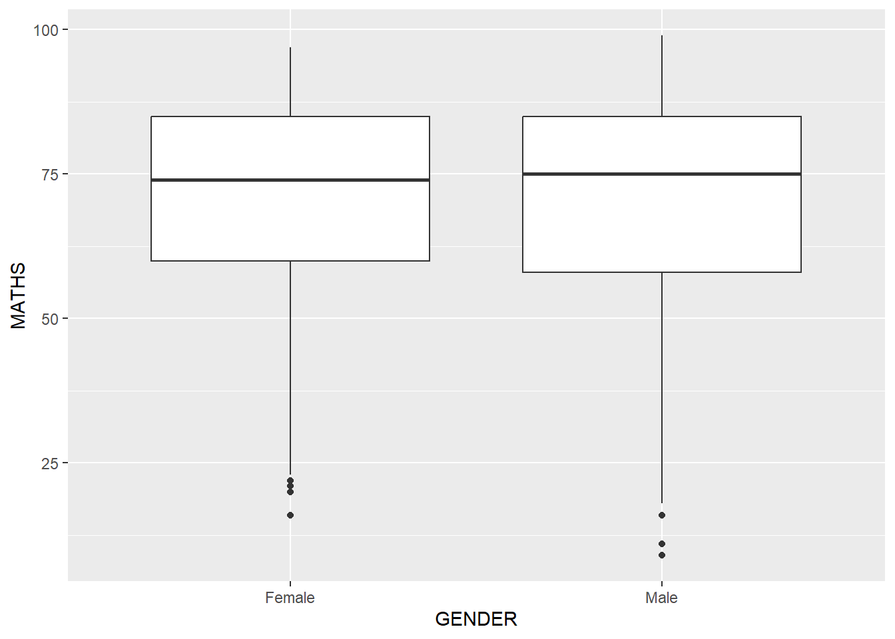
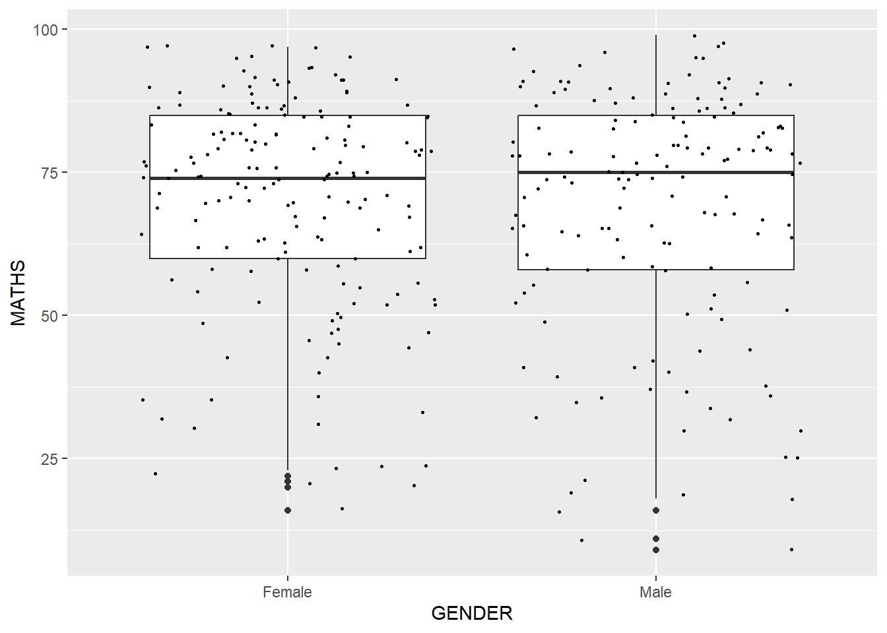
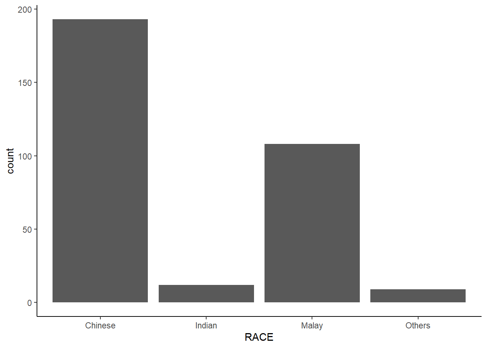
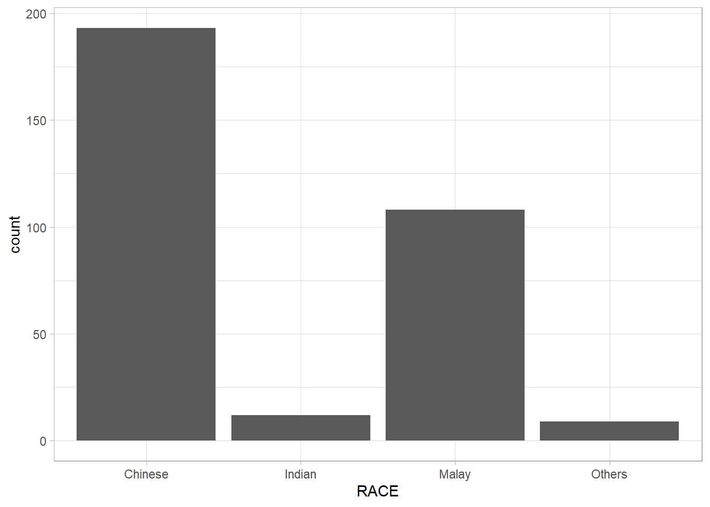

pacman::p_load(tidyverse)Hands on Exercise 1
A Layered Grammar of Graphics ggplot2 methods
1 A Layered Grammar of Graphics: ggplot2 methods
1.1 Install and Launch R Packages
1.2 Importing Data
exam_data <- read_csv("data/Exam_data.csv")Rows: 322 Columns: 7
── Column specification ────────────────────────────────────────────────────────
Delimiter: ","
chr (4): ID, CLASS, GENDER, RACE
dbl (3): ENGLISH, MATHS, SCIENCE
ℹ Use `spec()` to retrieve the full column specification for this data.
ℹ Specify the column types or set `show_col_types = FALSE` to quiet this message.1.3 Plotting A Simple Bar Chart
ggplot(data = exam_data,aes(x=RACE)) +
geom_bar()
1.4 R Graphics VS ggplot()
hist(exam_data$MATHS)
ggplot(data=exam_data, aes(x = MATHS)) +
geom_histogram(bins=10,
boundary = 100,
color="black",
fill="grey") +
ggtitle("Distribution of Maths scores")
1.5 Grammar of Graphics
Data: The dataset being plotted.
Aesthetics take attributes of the data and use them to influence visual characteristics, such as position, colours, size, shape, or transparency.
Geometrics: The visual elements used for our data, such as point, bar or line.
Facets split the data into subsets to create multiple variations of the same graph (paneling, multiple plots).
Statistics, statiscal transformations that summarise data (e.g. mean, confidence intervals).
Coordinate systems define the plane on which data are mapped on the graphic.
Themes modify all non-data components of a plot, such as main title, sub-title, y-aixs title, or legend background.
1.6 ggplot2:data
ggplot(data=exam_data)
Note
- A blank canvas appears.
ggplot()initializes a ggplot object.- The
dataargument defines the dataset to be used for plotting. - If the dataset is not already a data.frame, it will be converted to one by
fortify().
1.7 ggplot2: Aesthetic mappings
ggplot(data=exam_data,
aes(x= MATHS))
Note
- ggplot includes the x-axis and the axis’s label.
1.8 ggplot2: geom
Geometric objects are the actual marks we put on a plot. Examples include:
- geom_point for drawing individual points (e.g., a scatter plot)
- geom_line for drawing lines (e.g., for a line charts) - geom_smooth for drawing smoothed lines (e.g., for simple trends or approximations)
- geom_bar for drawing bars (e.g., for bar charts)
- geom_histogram for drawing binned values (e.g. a histogram)
- geom_polygon for drawing arbitrary shapes
- geom_map for drawing polygons in the shape of a map! (You can access the data to use for these maps by using the map_data() function).
ggplot(data=exam_data,
aes(x=RACE)) +
geom_bar()
ggplot(data=exam_data,
aes(x = MATHS)) +
geom_dotplot(binwidth=2.5,
dotsize = 0.5) +
scale_y_continuous(NULL,
breaks = NULL) 
ggplot(data=exam_data,
aes(x = MATHS)) +
geom_histogram() `stat_bin()` using `bins = 30`. Pick better value with `binwidth`.
ggplot(data=exam_data,
aes(x = MATHS,
colour = GENDER)) +
geom_density() 
ggplot(data=exam_data,
aes(y = MATHS,
x= GENDER)) +
geom_boxplot() 
ggplot(data=exam_data,
aes(y = MATHS,
x= GENDER)) +
geom_boxplot(notch=TRUE) 
ggplot(data=exam_data,
aes(y = MATHS,
x= GENDER)) +
geom_violin()
ggplot(data=exam_data,
aes(x= MATHS,
y=ENGLISH)) +
geom_point() 
1.8.1 combined geom objects
ggplot(data=exam_data,
aes(y = MATHS,
x= GENDER)) +
geom_boxplot() +
geom_point(position="jitter",
size = 0.5) 
1.9 ggplot2: stat
1.9.1 Working with Stat()
ggplot(data=exam_data,
aes(y = MATHS, x= GENDER)) +
geom_boxplot() +
stat_summary(geom = "point",
fun = "mean",
colour ="red",
size=4) 
1.9.2 Working with Geom()
ggplot(data=exam_data,
aes(y = MATHS, x= GENDER)) +
geom_boxplot() +
geom_point(stat="summary",
fun="mean",
colour="red",
size=4) 
1.10 Best Fit Curve for Scatterplot
geom_smooth() is used to plot a best fit curve on the scatterplot.
ggplot(data=exam_data,
aes(x= MATHS, y=ENGLISH)) +
geom_point() +
geom_smooth(size=0.5) Warning: Using `size` aesthetic for lines was deprecated in ggplot2 3.4.0.
ℹ Please use `linewidth` instead.`geom_smooth()` using method = 'loess' and formula = 'y ~ x'
The default smoothing line method can be overwritten as :
ggplot(data=exam_data,
aes(x= MATHS,
y=ENGLISH)) +
geom_point() +
geom_smooth(method=lm,
linewidth=0.5)`geom_smooth()` using formula = 'y ~ x'
1.11 ggplot2: Facets
ggplot(data=exam_data,
aes(x= MATHS)) +
geom_histogram(bins=20) +
facet_wrap(~ CLASS)
ggplot(data=exam_data,
aes(x= MATHS)) +
geom_histogram(bins=20) +
facet_grid(~ CLASS)
1.12 ggplot2: Coordinates
ggplot(data=exam_data,
aes(x=RACE)) +
geom_bar() +
coord_flip()
ggplot(data=exam_data,
aes(x= MATHS, y=ENGLISH)) +
geom_point() +
geom_smooth(method=lm,
size=0.5) +
coord_cartesian(xlim=c(0,100),
ylim=c(0,100))`geom_smooth()` using formula = 'y ~ x'
coord_cartesian(): the default cartesian coordinate systems, where you specify x and y values (e.g. allows you to zoom in or out).coord_flip(): a cartesian system with the x and y flipped.coord_fixed(): a cartesian system with a “fixed” aspect ratio (e.g. 1.78 for a “widescreen” plot).coord_quickmap(): a coordinate system that approximates a good aspect ratio for maps.
1.13 ggplot2: themes
ggplot(data=exam_data,
aes(x=RACE)) +
geom_bar()+
theme_gray()
ggplot(data=exam_data,
aes(x=RACE)) +
geom_bar()+
theme_classic()
ggplot(data=exam_data,
aes(x=RACE)) +
geom_bar()+
theme_light()